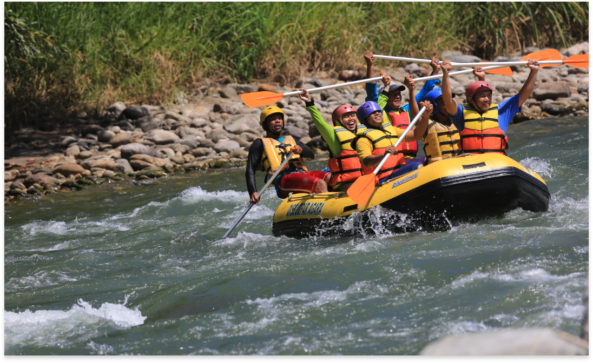

Jl. Ir. H. Djuanda No.15 Bogor
Phone: (0251) 832 401 3, (0251) 8317 011 | Email: dit.pjlhk@gmail.com
Copyright 2020 © Kementerian Lingkungan Hidup Dan Kehutanan Republik Indonesia. All Rights Reserved.
Oleh : Balai Taman Nasional Baluran | 5 Sep’ 2020
Jakarta, 5 September 2020. Pengin coba olahraga yang memacu adrenalin? Cobain rafting deh.
Olahraga air yang satu ini selain membuat kamu senang, sekaligus belajar tentang kekompakan tim
dan petualangan.
Coba deh arungi sungai-sungai yang deras ini dengan teman-temanmu. Uji
adrenalinmu di 10 spot rafting terbaik di Indonesia
Sungai Citarik ini masih aman buat kamu yang pemula bermain arung jeram. Jarak tempuh sungai ini mulai dari 5 kilometer dan yang paling jauh mencapai 17 kilometer.
Sungai yang satu ini memang banyak belum dikenal wisatawan. Padahal, Sungai Serayu menyimpan jeram yang cukup memacu adrenalinmu, lho. Di tempat ini juga ada sarana outbound bagi kamu yang ingin refreshing setelah basah-basah main arung jeram.
Jika kamu ingin merasakan sensasi yang berbeda dari rafting biasa, coba ke lokasi yang satu ini. Bukan naik perahu karet yang biasanya, melainkan kamu akan arung jeram menggunakan ban. Kamu juga bisa menggunakan pelampung yang kamu gunakan. Kamu akan diajak berkeliling menyusuri gua dan sungai yang bening berwarna hijau satu ini.
Selain kamu bisa rafting di sini, kamu juga bisa mengajak keluarga atau teman-temanmu untuk menikmati fasilitas outbound. Kemudian kamu bisa berwisata memetik buah strawberi dan berkeliling danau Cileunca dengan perahu. Untuk deras jeramnya, masih aman kok buat kamu yang belum pernah rafting.
Sungai ini memiliki tingkat jeram II sampai III pada musim kemarau, yang artinya masih aman buat para pemula. Namun, tingkatnya akan bertambah sulit jika memasuki musim hujan. Wisata air ini sangat terkenal di Sumatera dengan jarak tempuh 3 jam.
Sungai yang satu ini terkenal dengan grade IV yang begitu menantang. Lokasi ini sering digunakan sebagai salah satu lokasi perlombaan rafting internasional.
Jika kamu berwisata ke Yogya, coba arung jeram di Sungai Progo deh. Sungai ini dibagi menjadi dua lokasi, Progo atas dan Progo bawah. Progo atas tingkat jeramnya termasuk aman. Sedangkan, Progo bawah tingkat jeramnya cukup deras, yang artinya hanya ditunjukkan bagi mereka yang sudah berpengalaman. Jika musim hujan, arus jeramnya semakin menantang untuk ditaklukkan.
Sungai yang hanya memiliki tingkat jeram I-III ini sangat cocok bagi kamu yang sekedar ingin merasakan sensasi memacu adrenalin.
Sungai Sa’dan memiliki tingkat III hingga IV. Sehingga, kamu yang sudah berpengalaman atau ingin mencari sensasi yang memacu adrenalin, mungkin kamu bisa mencoba rafting di sungai satu ini.
Kementerian Lingkungan Hidup dan Kehutanan mempunyai tugas menyelenggarakan urusan pemerintahan di bidang lingkungan hidup dan kehutanan untuk membantu Presiden dalam menyelenggarakan pemerintahan negara.
Selengkapnya Tentang Taman NasionalPhone: (0251) 832 401 3, (0251) 8317 011 | Email: dit.pjlhk@gmail.com
Copyright 2020 © Kementerian Lingkungan Hidup Dan Kehutanan Republik Indonesia. All Rights Reserved.